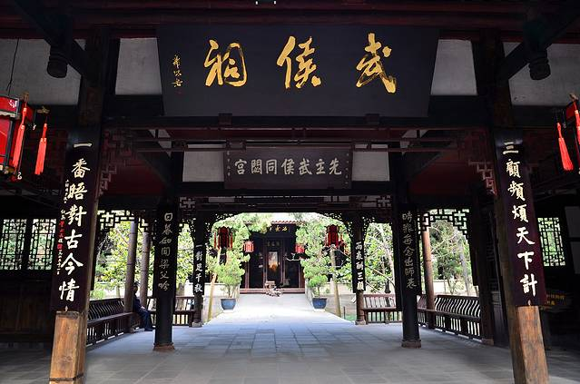
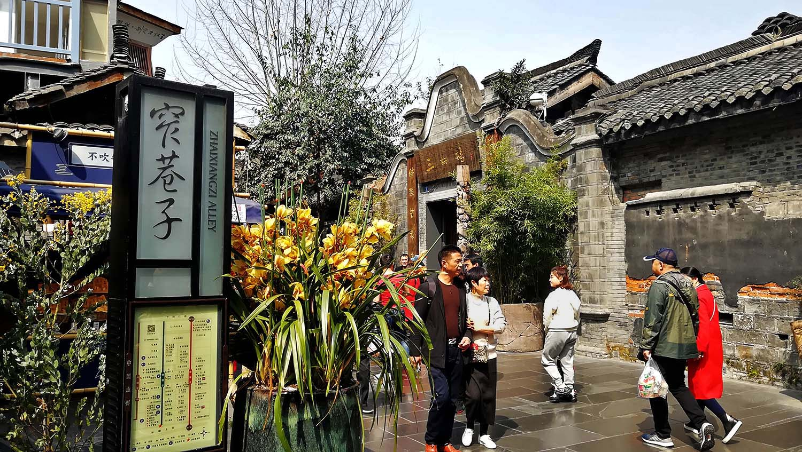
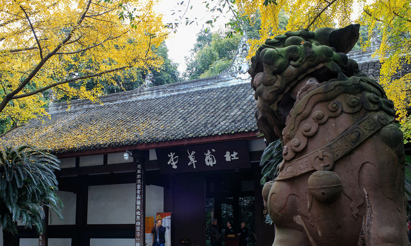
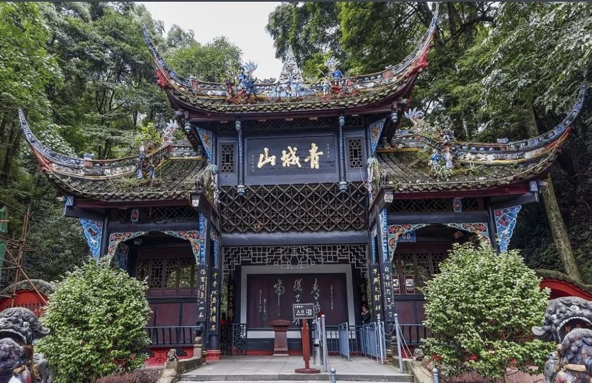
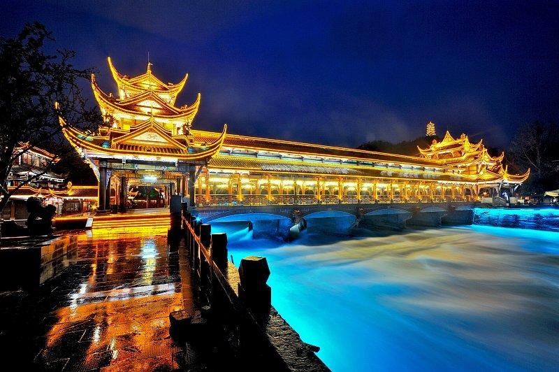

NO.01
武侯祠
中国唯一的君臣合祀祠庙，也是全国影响最大的三国遗迹博物馆。红墙竹影间，诸葛亮的“鞠躬尽瘁、死而后已”与刘备的雄才大略在此交相辉映。
祠内古柏森森、碑刻林立，漫步其中仿佛穿越回那个群雄逐鹿的年代。每年春节的“游喜神方”庙会，更是成都人延续百年的年俗盛典。
前往攻略 →从三国烟云到熊猫故里，一步一景，皆是成都的故事

NO.01
中国唯一的君臣合祀祠庙，也是全国影响最大的三国遗迹博物馆。红墙竹影间，诸葛亮的“鞠躬尽瘁、死而后已”与刘备的雄才大略在此交相辉映。
祠内古柏森森、碑刻林立，漫步其中仿佛穿越回那个群雄逐鹿的年代。每年春节的“游喜神方”庙会，更是成都人延续百年的年俗盛典。
前往攻略 →NO.02
全球知名的大熊猫科研保护机构，生活着上百只可爱“滚滚”。早晨的熊猫最为活跃，啃竹、爬树、打滚，憨态可掬的模样令人忍俊不禁。
园区竹林掩映、绿意盎然，还能邂逅小熊猫与黑天鹅。与国宝近距离相遇，是每一位来蓉游客最治愈的体验。
前往攻略 →
NO.03
由宽巷子、窄巷子、井巷子三条老街组成的清代古街区，是成都遗留下来的较成规模的清朝古街道，青砖黛瓦间藏着最地道的市井烟火。
在这里，可以掏一次耳朵、看一场变脸、喝一碗盖碗茶，把成都人的慢生活过个遍。夜晚灯火亮起，老院落的民谣与火锅香交织，别有一番风味。
前往攻略 →
NO.04
诗圣故居，红墙夹道，竹林幽深，极具文化底蕴。千年前杜甫在此写下“安得广厦千万间”，如今这里古木参天、诗意盎然。
茅屋故居、浣花溪水与历代碑刻相映成趣，漫步其中，可近距离感受“诗圣”笔下的家国情怀与文人风骨。
前往攻略 →
NO.05
道教名山，“青城天下幽”，满眼绿意，适合吸氧。群峰环绕、林木葱茏，是道家“天人合一”的修身胜地。
拾级而上，天师洞、上清宫掩映在云雾山岚之间。晨钟暮鼓，清幽入骨，堪称都市之外的一方净土。
前往攻略 →
NO.06
千年水利工程，看古人的智慧，风景波澜壮阔。鱼嘴分水、飞沙堰排沙、宝瓶口引水，两千余年仍在泽被天府。
站在安澜索桥上，岷江奔涌而过，一边是古堰的千年智慧，一边是青城的满目苍翠，是感受蜀地风光与文明的绝佳去处。
前往攻略 →